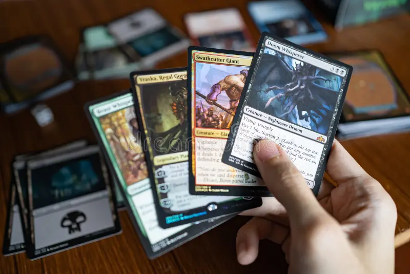

La colaboración más esperada: ¡Marvel!

La comunidad de Magic: The Gathering está al borde de la emoción con el anuncio de una colaboración sin precedentes con Marvel. Esta alianza traerá a la vida a personajes icónicos del universo Marvel en forma de cartas coleccionables, permitiendo a los jugadores experimentar batallas épicas entre héroes y villanos. Los detalles sobre las cartas y su lanzamiento se revelarán en un evento especial, ¡así que mantente atento!
¡Se acerca la fecha del Regional Championship: Praga!
Los preparativos están en marcha para el tan esperado Regional Championship que se llevará a cabo en Praga. Jugadores de toda Europa se reunirán para competir por un lugar en el campeonato mundial. Con emocionantes premios y la oportunidad de demostrar habilidades estratégicas, este evento promete ser una experiencia inolvidable tanto para competidores como para espectadores. ¡No te lo pierdas!
Magic, ¿un juego de azar?

En el mundo de los juegos de cartas, Magic: The Gathering ha sido objeto de debate sobre si se trata de un juego de habilidad o de azar. En este artículo, exploramos las diferentes perspectivas sobre la mecánica del juego, analizando cómo la estrategia y la toma de decisiones pueden influir en el resultado de cada partida. Únete a nosotros mientras desentrañamos los mitos y realidades detrás de esta apasionante discusión.